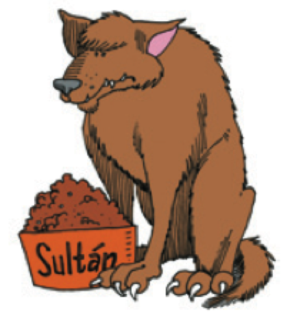
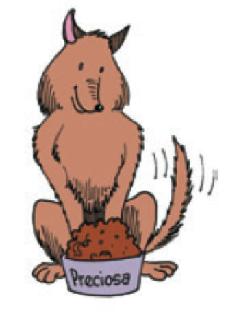

Español 1.5
Capítulo 3
Joseph V. Casillas
Middlebury College: Verano 2015
Repaso
Repaso
- Vocabulario
- el hotel
- los números
- Verbos irregulares
- e > ie
- e > i
- o > ue
- u > ue
- verbos -go
Recordad...
- la bota
- las formas nosotros y vosotros no tienen cambio de raíz
- verbos -go cambian en forma de yo
- salir > salgo
Ejercicios (verbos)
- Actividad 2-28 p. 77
- Actividad 2-30 p. 77
Ejercicios (números)
- Actividad 2-22 p. 72
- Actividad 2-23 p. 73
Puentes Capítulo 3 - “Entre familia”
El plan

- Vocabulario:
- descripciones
- Gramática:
- Los adjetivos
- Los adjetivos comparativos
- Los adjetivos superlativos
- Estrategias para la comunicación oral
¿Cómo son las personas?: las descripciones personales
¿Cómo son estas personas?
Haz una lista de adjetivos útiles
Vocabulario útil: los rasgos físicos
Vocabulario útil: la personalidad y el carácter
Los adjetivos: la concordancia de número y género

- Los adjetivos concuerdan con sus respectivos sustantivos en cuanto al número y al género
- Dulce es muy bonita.
- Es simpática pero muy seria.
- Es muy amable y trabajadora.
- Tiene el pelo castaño.
Los adjetivos: la concordancia de número y género
- Los adjetivos concuerdan con sus respectivos sustantivos en cuanto al número y al género
- Carlos es muy alto y guapo.
- Es tímido pero muy divertido.
- Es muy responsable y optimista. (¡ojo aquí!)
- Tiene el pelo negro.
Más sobre los adjetivos
| Adjetivos | Masculino | Femenino | ||
|---|---|---|---|---|
| termina en: | Singular | Plural | Singular | Plural |
| -o | alto | altos | alta | altas |
| -e | amable | amables | amable | amables |
| consonante | informal | informales | informal | informales |
| -dor | trabajador | trabajadores | trabajadora | trabajadoras |
| -ista | optimista | optimistas | optimista | optimistas |
Descanso (10 minutos)

Más sobre los adjetivos
- En general, ponemos los adjetivos después de los sustantivos
- Tiene el pelo negro y los ojos grandes y azules.
- Algunos adjetivos especiales pueden aparecer antes.
- Un buen hombre.
- Un mal ejemplo.
- Unos buenos amigos.
Más sobre los adjetivos
- El adjetivo grande tiene dos significados que varían según su posición...
- Una gran universidad.
- Una universidad grande.
- Ejercicio 3-8, p. 95
Los comparativos y los superlativos
Las comparaciones de superioridad:
más + (adjetivo, adverbio, sustantivo) + que


- Sultán es más grande que Preciosa.
- Sultán come más rápidamente que Preciosa.
- Sultán tiene más energía que Preciosa.
Las comparaciones de inferioridad:
menos + (adjetivo, adverbio, sustantivo) + que
- Lobo es menos grande que Preciosa.
- Lobo duerme menos tranquilamente que Preciosa.
- Lobo tiene menos juguetes que Preciosa.
Las comparaciones irregulares:
Lobo es menor que Preciosa.
Preciosa es mayor que Lobo.
La personalidad de Preciosa es mejor que la personalidad de Lobo.
La personalidad de Lobo es peor que la personalidad de Sultán.
Las comparaciones de igualdad:
tan + (adjetivo, adverbio) + como
Lobo es tan malo como Sultán.
Lobo corre tan rápidamente como Sultán.
Las comparaciones de igualdad:
tanto(s), tanta(s) + (sustantivo) + como
Lobo tiene tantos juguetes como Sultán.
Lobo tiene tanta energía como Sultán.
¡OJO! Lobo come tanto como Sultán.
Los superlativos expresan los extremos
el, la, los, las + (sustantivo) + más/menos + (adjetivo) de un grupo
- Sultán es el perro más grande de los tres.
- Lobo es el menos grande pero el más feroz del grupo.
Ejercicios
- 3-12, p. 98
Repaso
- Vocabulario:
- descripciones
- Gramática:
- Los adjetivos
- Los adjetivos comparativos
- Los adjetivos superlativos
- Estrategias para la comunicación oral
Con un compañero...
- Terminar actividad 3-12, p. 98
- Actividad 3-13 p. 98
El plan
- Vocabulario:
- La familia
- Gramática
- Ser y estar
- Instrucciones Examen Oral 1
- Estrategias para la comunicación oral
Repasito


La familia

Mi árbol genealógico
- En una hoja de papel dibujad una imagen de ti mismo.
- Debajo de la imagen, pon tu nombre.
- Intercambiar hojas con un vecino.
- Descríbele tu familia para que él/ella pueda rellenar tu árbol.
- Devuelve la hoja y haz las correcciones necesarias.
- Comparte con la clase la descripción del árbol
Las mascotas
¿Cuántas mascotas tienes?
¿Qué tipos de mascotas hay en tu casa?
Maya
Descanso (10 minutos)
Ser y estar
El verbo ser: para identificar y clasificar

Maya es mi perra.
Mi hermana es enfermera.
Yo soy lingüista.
Tú eres estudiante.
Jing es de Ohio.
El verbo ser: para describir características con los adjetivos
Sultán es grande y feroz.
Sultán y Lobo son buenos perros.
Maya es muy...
Los usos del verbo ser: con la preposición "de"
- Posesión
- ¿De quién es el cuarto? Es de Alicia.
- Origen
- ¿De dónde es Belkis? Es de Venezuela.
Los usos del verbo ser: con la HORA y el LUGAR de los eventos
¿Cuándo es la fiesta?
Es el sábado a las siete de la noche.
La fiesta es en la casa del profesor.
Los usos del verbo estar: la ubicación de las cosas

¿Dónde está el profe?
Está en el gran cañón.
Los usos del verbo estar: para describir una condición

¿Cómo está Jackie Chan?
Está...
Ser y estar: las características versus las condiciones
¿Cómo es Jackie Chan?
- Es bajo con pelo negro.
- Es simpático.
¿Cómo está Jackie Chan?
- Está confundido.
- Está frustrado.
Ejercicios
- Actividad 3-24, p. 107
- Actividad 3-25, p. 108
- Actividad 3-26, p. 108
Estrategias para la comunicación oral
- Con un compañero haz una lista de 4 o 5 cosas que puedes hacer para mejorar la comunicación oral.
- Piensa en estrategias que puedes practicar sólo, con otras personas, en casa, en clase, etc.
Instrucciones Examen Oral 1
Repaso
Repaso
- Vocabulario:
- La familia
- Gramática
- Ser y estar
- Instrucciones Examen Oral 1
- Estrategias para la comunicación oral
El plan
- Vocabulario:
- Los muebles la casa
- La rutina
- Gramática:
- Reflexivos
- El participio pasado
- Preparación Examen Oral 1: individual (capítulos 1, 2 y 3)
¿Cómo es la casa?: describir características de la casa


- Mi casa es nueva (vieja).
- La sala es grande y cómoda.
- Los muebles son elegantes.
¿Cómo es la casa?: describir la casa, los cuartos y los muebles


- Normalmente, mi cuarto está ordenado (desordenado).
- Por lo general, la cocina está limpia.
- Por desgracia, el refrigerador está descompuesto y la ventana está rota.
¿Dónde vive la familia?: la casa

Las relaciones espaciales - ¿Dónde está el gato

Con un compañero nuevo...
- Saca una hoja de papel
- Dibuja los planes de tu casa
- Puede ser real
- Puede ser la casa de tus sueños
- A la vez que dibujas, explícale a tu compañero lo que hay en la casa
- Describe con mucho detalle
- Intenta ser consciente de las pausas, la concordancia, etc. mientras hablas
Ejercicios
- 3-21 p. 105 (audio)
- 3-22 p. 105
Un día ajetreado: la rutina diaria
- Por la mañana...

Un día ajetreado: la rutina diaria
- Por la mañana...

Un día ajetreado: la rutina diaria

Un día ajetreado: la rutina diaria
- Por la tarde...

Un día ajetreado: la rutina diaria
- Por la noche...
Ejercicios
- 3-29, p. 111 (audio)
- 3-30, p. 111
Descanso (10 minutos)
Los verbos reflexivos
Los verbos reflexivos: el sujeto y el objeto son la misma persona

Los pronombres reflexivos reflejan el sujeto de la frase
- Prefiero levantarme temprano.
- Me lavo LOS dientes todos los días.
Los verbos regulares:

Los verbos irregulares
Ejercicios
3-33, p. 115
3-34, p. 115
JT
Preparación Examen Oral 1: individual (capítulos 1, 2 y 3)
- Eres el/la profesor/a. Escoge dos o tres preguntas de cada capítulo y házselas a tu compañero (ver hoja de ayer)
- Presta atención al vocabulario que necesites, que olvides, etc.
- Apunta cuántas veces tu compañero tiene que pausar, pensar, etc. ¿Parece fluido?
- Proporciónale una nota a tu compañero y dale sugerencias para mejorar.
Repaso
Repaso
- Vocabulario:
- Los muebles la casa
- La rutina
- Gramática:
- Reflexivos
- El participio pasado
- Preparación Examen Oral 1: individual (capítulos 1,2 y 3)